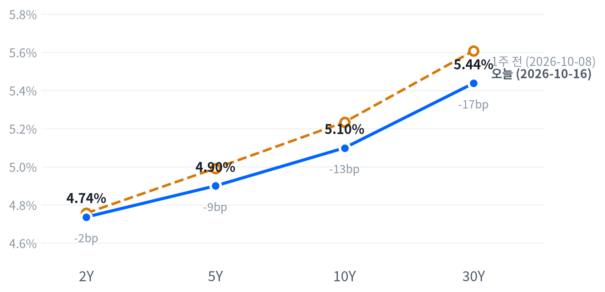

네오클라우드 업체 CoreWeave의 부채 상환 능력을 둘러싼 우려가 반도체·저장장치 매도로 번져 나스닥이 6월 이후 가장 나쁜 하루를 보냈다. 에너지·유틸리티·필수소비재는 올라 하락은 기술 업종에 몰렸고, 국채금리는 거의 움직이지 않았다.
10월 인상 확률이 내려간 날의 급락이라 정책금리보다 AI 차입 신용이 매도를 이끌었다고 본다. 10월 22일 웨스턴디지털 실적과 27~28일 FOMC가 다음 분기점이다.
정책금리 부담이 줄어든 날 AI 하드웨어가 무너졌다. 워시 의장이 10월 회의에 신호를 주지 않아 CME FedWatch 10월 인상 확률이 14.9%로 내려갔지만, CoreWeave의 부채 상환 능력을 둘러싼 우려가 반도체·저장장치 매도로 번지며 나스닥이 2.15% 내렸다. 에너지·유틸리티·필수소비재는 오히려 올랐다.
이 매도는 할인율보다 AI 업체의 차입 신용을 타고 번졌다고 판단한다. 2년물은 1.5bp 내렸고 10년물은 거의 제자리였는데, AI 인프라 다섯 종목(마벨·코히런트·루멘텀·GE 버노바·버티브)은 평균 4.46% 내렸다. 시장에서 나온 설명도 더 높은 금리가 부채에 기대는 AI 영역을 압박할지에 대한 불안이었다. 연속 하락 뒤의 포지션 정리가 섞였을 여지는 있다. AI 신용 위험을 가격으로 잰 시장 기대는 없어서, 우리 해석이 시장과 어디서 갈리는지는 아직 잴 수 없다.
반도체·AI 하드웨어 업종의 3개월 상대수익률은 이번 주 크게 나빠졌고, 신용 쪽 설명이 맞다면 금리 안정만으로는 되돌림을 기대하기 어렵다. 먼저 진정돼야 할 것은 네오클라우드 회사채 같은 AI 차입 신용 지표인데 정기적으로 받는 자료가 아니어서, 이 업종은 지금 관찰에 둔다. 저장장치는 회사 고유 재료 없이 마이크론보다 더 내렸다. 우리는 이 추가 낙폭이 HDD 가격결정력 훼손보다 AI 하드웨어 관련주 전반의 포지션 축소가 올해 많이 오른 종목에 더 크게 실린 결과로 본다. 그렇다면 10월 22일 웨스턴디지털 실적이 수요 유지를 확인할 때 그 할인이 풀려야 하고, 그 전에는 새 아이디어로 삼지 않는다.
10월 16일 09:30(ET)부터 27일 종가까지, 2년물 종가가 전일 대비 5bp 이상 오른 세션마다 AI 인프라 다섯 종목 단순평균 등락률에서 S&P 등락률을 뺀 값을 잰다. 그 평균이 -2.0%p보다 덜 나쁘면 신용 쪽 판단이 지지되고, 그 이하면 정책금리 쪽 설명이 맞아 이 판단은 약해진다. 그런 세션이 없으면 결론을 내지 않고, 다섯 종목의 실적 발표일은 비교에서 뺀다. 16일은 2년물이 내려 비교에 들지 않았다. 다음 분기점은 10월 22일 장 마감 뒤 웨스턴디지털 실적과 27~28일 FOMC다.
출처: CNN
| 지수 | 종가 | 등락률 | 기준일 |
|---|---|---|---|
| 닛케이225 | 64,425.95 | -4.90% | 10월 15일 |
| 항셍 | 24,062.72 | -1.03% | 10월 15일 |
| 상해종합 | 3,707.48 | -1.59% | 10월 15일 |
| DAX | 25,382.62 | +0.33% | 10월 15일 |
| FTSE100 | 10,840.40 | +1.08% | 10월 15일 |
| 유로스톡스50 | 6,168.26 | -0.36% | 10월 15일 |
| VIX | 19.99 | +21.45% | 10월 16일 |
아시아·유럽 지수는 들어온 마지막 종가인 10월 15일 값이다.
유럽은 미국과 엇갈렸다. 10월 15일 유럽 세 지수는 평균 0.35% 올랐지만 FTSE100(+1.08%)과 유로스톡스50(-0.36%)이 반대로 가 지역 안에서도 갈렸다. 아시아는 같은 날 닛케이가 4.90% 급락하는 등 평균 2.51% 내려 미국의 기술주 약세와 방향이 같았다. 미국 장이 끝났을 때 VIX는 19.99로 뛰어 있었다.
야간 선물은 좁은 범위에서 움직였다. S&P 선물(ES)은 전날 20:00(ET) 7,775가 저점, 04:00 7,810이 고점으로 범위가 0.45%였고, 나스닥 선물(NQ)도 01:00 30,225 고점에서 0.89% 범위 안에 머물렀다. 현물은 S&P +0.02%, 나스닥 -0.24%, 러셀2000 +0.06%의 갭으로 보합 출발했다. 하락은 개장 뒤에 시작됐다.
평균적인 종목은 지수만큼 빠지지 않았다. 동일가중 S&P에서 시총가중 지수를 뺀 수익률 차이가 +0.68%p로, 참여도는 소수가 끌어내림 쪽이었다. 하락이 소수의 대형 기술주에 몰렸다는 뜻이다. S&P·나스닥·러셀2000은 모두 저점권에서 끝났다.
저점권·고점권 경계는 최근 2,259거래일의 일간 종가 위치 이력으로 다시 잰 기준이다.
반도체·저장장치를 끌어내린 것은 AI 차입 신용 우려였고, 유가 급등이 에너지를 따로 밀어 올렸다. 오전에는 은행 강세가 AI 불안을 상쇄해 S&P가 보합권을 지켰다는 보도가 나왔지만, 오후로 갈수록 반도체 매도가 커지며 그 균형이 깨졌다. 국채는 이 매도에 거의 반응하지 않아, 전날처럼 주식에서 국채로 옮겨 가는 안전자산 매수는 이어지지 않았다. 금요일 장 마감 뒤 시간외 거래를 움직인 발표는 확인되지 않았다.
출처: Reuters
| 지수 | 종가 | 등락률 |
|---|---|---|
| S&P500 가치주 | 235.46 | -0.08% |
| 다우존스 | 52,002.41 | -0.34% |
| S&P500 | 7,659.44 | -1.09% |
| 러셀2000 | 2,721.37 | -1.66% |
| S&P500 성장주 | 138.93 | -1.93% |
| 나스닥 | 26,140.03 | -2.15% |
| 섹터 | 등락률 |
|---|---|
| 에너지 | +2.52% |
| 유틸리티 | +1.34% |
| 필수소비재 | +1.08% |
| 소재 | +0.71% |
| 금융 | +0.45% |
| 부동산 | +0.40% |
| 산업재 | -0.08% |
| 헬스케어 | -0.27% |
| 경기소비재 | -0.84% |
| 커뮤니케이션서비스 | -1.89% |
| 기술 | -3.02% |
나스닥은 AI 하드웨어 매도에 2.15% 내린 26,140으로 마감했고, 6월 5일 이후 가장 나쁜 하루였다는 보도가 나왔다. S&P500은 1.09% 내린 7,659, 러셀2000은 1.66% 내렸고 다우는 0.34% 내리는 데 그쳤다. 그래도 S&P는 최근 2년(504거래일) 가운데 이보다 높았던 날이 40일뿐인 높은 자리에 있다. 한 주로 보면 S&P는 1.9%, 나스닥은 4.5% 내려 둘 다 6월 이후 가장 나쁜 주를 보냈다는 보도가 나왔다.
S&P500·나스닥·러셀2000의 하루 움직임은 최근 60거래일 평균 하루 폭의 각각 1.57배·2.06배·1.92배, VIX는 3.75배다.
하락은 AI 차입 신용 우려에서 시작해 반도체와 저장장치로 번졌다. 보도에 따르면 CoreWeave는 오전 7.6%, 이후 10.3%까지 밀렸고 이 회사 회사채 수익률은 15%를 넘었다. D.A. Davidson의 길 루리아는 CoreWeave가 빌린 돈을 갚을 만큼 수익을 낼지 불분명하다고 말했다. 반도체 지수는 2025년 4월 이후 가장 가파른 8거래일 하락으로 향했다는 보도가 나왔고, 정오 무렵에는 메모리가 기술주 약세를 주도했다는 분석이 나왔다. VIX도 평소 하루 움직임의 세 배 넘는 폭으로 뛰었다.
지수 하락은 기술 업종이 거의 다 만들었다. 추정 기여도로 보면 기술이 지수에서 1.02%p를 덜어냈고, 커뮤니케이션서비스가 0.24%p, 경기소비재가 0.11%p를 더 뺐다. 에너지·유틸리티(각 0.06%p)와 금융(0.05%p), 필수소비재(0.04%p)가 일부를 메웠고, 업종 합으로 설명되지 않는 부분은 +0.11%p다. 성장주가 1.93% 내리는 동안 가치주는 0.08% 내리는 데 그쳐, 이 하락은 시장 전체의 위험회피보다 AI 하드웨어 한 무리의 재평가에 가깝다.
추정 기여도는 업종 비중을 직접 받지 않아, 최근 252거래일 지수·업종 수익률로 추정한 비중을 곱한 값이다. 소재와 부동산은 비중을 추정할 수 없어 빠졌다.
나스닥은 개장 직후가 그날의 고점이었고, 15:00(ET)에 시가보다 2.35% 낮은 저점을 찍은 뒤 거의 되돌리지 못했다. 엔비디아도 오전에 1% 가까이 올랐다가 1.43% 내려 끝났다.
출처: CNBC, AP, Reuters, Benzinga
| 만기 | 종가(10월 16일) | 전일比(bp) | 1주 전 | 주간 변화(bp) |
|---|---|---|---|---|
| 2Y | 4.736% | -1.5 | 4.756% | -2.0 |
| 5Y | 4.899% | +0.2 | 4.991% | -9.2 |
| 10Y | 5.098% | +1.1 | 5.233% | -13.5 |
| 30Y | 5.437% | +0.9 | 5.607% | -17.0 |
주가가 크게 밀린 날에도 국채금리는 거의 움직이지 않았다. 10년물은 1.1bp 오른 5.098%로 최근 2년(504거래일) 가운데 이보다 높았던 날이 16일뿐인 고점권에 있고, 2년물은 1.5bp 내린 4.736%였다. 전날 10년물이 크게 내린 것과 달리 이날은 안전자산 매수가 이어지지 않았다.

네이버 국채 종가, 전 만기 10월 16일 기준. 10월 12일 국채시장 휴장으로 1주 전 기준일은 10월 8일이다. 1주 전과 비교하면 30년물이 가장 크게 내리고 2년물은 조금 내려, 장기물이 이끈 불 플래트닝이다.
하루로 보면 커브의 앞과 뒤가 반대로 갔다. 2년물은 워시 의장 발언 뒤 10월 인상 확률이 내려가며 밀렸고, 10년·30년물은 1bp 안팎 올랐다. 2s10s는 36.2bp, 5s30s는 53.8bp다. 한 주 전 47.7bp였던 2s10s는 장기물 하락으로 크게 좁혀졌다.
이번 주 장기금리 하락은 실질금리가 이끌었다. 10월 15일 10년물 9bp 하락 가운데 6bp가 실질금리, 3bp가 기대인플레 몫이었고, 5거래일로는 18bp 하락 중 14bp가 실질금리였다. 보도는 15일 하락을 AI·반도체 매도에 따른 안전자산 매수로 설명했다. 16일에는 유가 급등에 10년물 기대인플레가 3bp 올라 2.35%가 됐고, 이 값은 위험·유동성 프리미엄이 섞인 물가 보상이다. 16일 명목금리 움직임의 실질금리 몫은 다음 갱신에서 나온다.
신용시장은 아직 크게 흔들리지 않았다. 하이일드 스프레드는 10월 15일 3.23%로 하루 2bp 좁혀졌지만 5거래일 사이 8bp 넓어졌다. CoreWeave 회사채 약세가 신용 전반으로 번졌는지는 16일 스프레드에서 드러난다. 재무부는 이날 2026 회계연도 순이자 비용이 처음 1조 달러를 넘었다고 밝혔지만 장기물 반응은 작았다.
5년 뒤 5년 명목금리 5.29%, 실질 2.98%(10월 15일 기준). 기대인플레 쪽 수치와의 교차검증은 할 수 없었고, 위험 프리미엄이 섞인 값이다.
출처: Investing.com, Kitco, CNBC
| 통화쌍 | 종가 | 등락률 | 기준일 |
|---|---|---|---|
| DXY | 101.79 | -0.24% | 10월 16일 |
| USD/KRW | 1,334.71 | -0.54% | 10월 16일 |
| USD/JPY | 157.99 | -0.07% | 10월 16일 |
| EUR/USD | 1.1241 | +0.21% | 10월 16일 |
달러는 위험회피의 날에 오히려 약했다. 달러지수는 0.24% 내린 101.79로 평소와 비슷한 크기로 움직였고, 유로/달러는 0.21% 오른 1.1241이었다. 원/달러는 0.54% 내린 1,335원으로 이보다 낮았던 날이 하루뿐인 원화 강세 끝자락에 있다. 엔/달러는 157.99엔으로 거의 제자리였다.
달러 약세는 위험회피보다 금리 경로에서 나왔다고 본다. 주가가 크게 밀렸는데도 달러는 안전자산으로 사들여지지 않았고, 10월 인상 확률이 내려가며 2년물이 밀린 쪽과 방향이 같았다. 인상 베팅이 물러나 달러가 밀렸다는 시장 설명도 나왔다.
원/달러의 위치는 최근 2년(504거래일) 종가 기준이다. 환율은 뉴욕 16:00 ET 가격, 전 거래일 같은 시각 대비다.
출처: Investing.com
| 품목 | 종가 | 등락률 |
|---|---|---|
| WTI | $98.93 | +2.77% |
| Brent | $109.54 | +3.58% |
| 천연가스 | $3.121 | -3.67% |
| 금 | $4,189.90 | -0.14% |
유가는 중동·러시아 공급 사건에 다시 뛰었다. WTI는 2.77% 오른 98.93달러로 이보다 높았던 날이 27일뿐인 높은 수준이다. 브렌트는 3.58% 오른 109.54달러였고, 장중 5월 이후 처음 110달러에 닿았다는 보도가 나왔다. 금은 0.14% 내려 거의 움직이지 않았고 천연가스는 3.67% 내렸다.
유가를 밀어 올린 것은 공급 쪽 사건이다. 사우디 에너지 시설 공격 루머가 돌며 유가가 장 초반 손실을 되돌렸고, 사우디 주도 연합군이 얀부를 겨냥한 탄도미사일을 요격했으며, 러시아 랴잔 정유소의 원유 증류설비가 드론 공격으로 멈췄다는 보도가 나왔다. IEA의 2,000만 배럴 넘는 연료 방출 합의(15일)와 미국의 전략비축유 교환 입찰은 반대 방향 재료다. 사우디 쪽은 루머와 요격이었고 설비 가동 중단이 보도된 것은 러시아 정유소여서, 이날 상승의 상당 부분은 위험 프리미엄으로 본다.
브렌트가 WTI보다 더 올라 두 유종의 가격 차는 10.61달러로 전날(9.49달러)보다 벌어졌다. 중동 공급 위험이 국제 유종에 더 실린 움직임이다. 금은 위험회피와 10월 인상 확률 하락이라는 우호 재료에도 제자리였고, 10년물 실질금리가 15일까지 5거래일 사이 14bp 내린 흐름도 금값으로 번지지 않았다.
WTI의 위치는 최근 2년(504거래일) 종가 기준이다. 원자재·환율은 뉴욕 16:00 ET 가격, 전 거래일 같은 시각 대비다. 결제가와 다를 수 있다.
출처: Reuters
미국 경기 국면은 교착을 유지한다. 9월 생산자물가·소매판매·산업생산과 주간 실업수당 청구가 새로 나왔지만, 성장 점수 0.043과 물가 점수 0.017은 둘 다 어느 쪽으로도 기울 만큼은 아니고 지금의 교착을 그대로 가리킨다. 10월 14일 교착으로 옮긴 지 3영업일째다.
물가는 생산자물가가 뛰었지만 전년비·PCE 지표가 아직 둔화 중이라 한쪽으로 기울지 않았고, 성장은 소매판매 증가의 대부분이 휘발유 값이라 살아났다고 볼 근거가 없다. 성장 좌표는 11월 6일 10월 고용이 다시 점검한다.
고용은 미미한 개선을 유지한다(7개 중 4개). 계속 실업수당 청구의 4주 평균이 뚜렷이 낮아졌고 신규 청구도 낮은 수준을 지켰다. 9월 비농업 고용과 임금 둔화는 반대쪽에 남아 있다. 고용축 +0.405
| 지표 | Actual | Forecast | Previous | 발표일 | 컨센 대비 | 직전 대비 | 추세 |
|---|---|---|---|---|---|---|---|
| 구인건수(8월) | 7,079K | — | 7,335K | 2026-08 기준월 | 악화 | 악화(미미) · 3개월 평균 7,336K → 7,199K | |
| 신규 실업수당 청구 | 199,000 | — | 198,000 | 2026-10-15 (10월 10일 주간) | 악화 | 개선(완만) · 4주 평균 204K → 198K | |
| 신규 청구 4주 평균 | 198,500 | — | 198,250 | 2026-10-15 (10월 10일 주간) | 악화 | 개선(완만) · 4주 평균 206K → 200K | |
| 계속 실업수당 청구 | 1,710,000 | — | 1,714,000 | 2026-10-15 (10월 3일 주간) | 개선 | 개선(뚜렷) · 4주 평균 1,757K → 1,709K | |
| 비농업 고용 변화(9월) | +29K | — | +133K | 2026-09 기준월 | 악화 | 악화(미미) · 3개월 평균 +81K → +51K | |
| 실업률(9월) | 4.2% | — | 4.1% | 2026-09 기준월 | 악화 | 개선(미미) · 3개월 평균 4.27% → 4.13% | |
| 평균시간당임금 MoM(9월) | +0.13% | — | +0.32% | 2026-09 기준월 | 악화 | 악화(미미) · 3개월 평균 +0.21% → +0.19% |
DOL이 10월 15일 발표한 주간 청구에서 계속 청구(10월 3일 주간)는 1710000건으로 4,000건 줄었고, 직전주는 1,714,000건으로 하향 수정됐다. 신규 청구(10월 10일 주간)는 199,000건으로 1,000건 늘었고 직전주는 198,000건으로 상향 수정됐다.
원계열 신규 청구는 190,626건으로 11.4% 늘었지만, 계절 요인이 예상한 증가폭(11.0%)과 거의 같았다. 주별로는 캘리포니아(+4,295건)와 일리노이(+1,108건)의 증가가 컸고, 피보험 실업률은 1.1%로 그대로였다. 원문은 파업·기상 같은 일회성 요인을 짚지 않았다.
해고가 낮은 채로 유지돼, 9월 고용 둔화는 해고보다 채용 둔화 쪽이라는 해석과 맞는다고 본다. 고용축의 개선을 받치지만 성장 좌표를 움직일 크기는 아니다.
생산·활동은 미미한 악화를 유지한다(5개 중 2개). 9월 산업생산이 늘었지만 석 달 평균으로는 보합이고, 기존주택 판매의 석 달 평균 하락이 주된 근거로 남았다. 생산·활동축 -0.458
| 지표 | Actual | Forecast | Previous | 발표일 | 컨센 대비 | 직전 대비 | 추세 |
|---|---|---|---|---|---|---|---|
| 산업생산 MoM(9월) | +0.66% | — | +0.06% | 2026-10-16 | 개선 | 보합 · 3개월 평균 +0.40% → +0.32% | |
| 내구재주문 MoM(8월) | -0.07% | — | +0.87% | 2026-08 기준월 | 악화 | 악화(완만) · 3개월 평균 +1.95% → +0.46% | |
| 신규주택판매(8월) | 684K | — | 643K | 2026-08 기준월 | 개선 | 개선(미미) · 3개월 평균 645K → 666K | |
| 기존주택판매(9월) | 399만 | — | 393만 | 2026-10-13 | 개선 | 악화(뚜렷) · 3개월 평균 4,120K → 3,993K | |
| 실질GDP QoQ 연율(2분기) | +2.2% | — | +2.5% | 2026년 2분기 기준 | 악화 | — |
소비는 악화에서 보합으로 올라섰다(2개 중 1개 개선). 9월 소매판매가 컨센서스를 웃돌았지만 석 달 평균은 보합이고, 늘어난 몫의 대부분이 주유소 매출이었다. 미시간대 소비자심리는 석 달 평균으로 미미하게 개선됐다. 소비축 +0.181
| 지표 | Actual | Forecast | Previous | 발표일 | 컨센 대비 | 직전 대비 | 추세 |
|---|---|---|---|---|---|---|---|
| 소매판매 MoM(9월) | +0.77% | 0.4% | +1.29% | 2026-10-15 | 상회▲ | 악화 | 보합 · 3개월 평균 +0.61% → +0.55% |
| 미시간대 소비자심리(8월) | 51.7 | — | 55.2 | 2026-08 기준월 | 악화 | 개선(미미) · 3개월 평균 49.3 → 52.1 |
Census가 10월 15일 발표한 9월 소매판매는 7,450억 달러로 전월비 0.77%(Census 발표 0.8%) 늘어 다우존스 컨센서스(0.4%)를 웃돌았다. 8월은 1.1%에서 1.3%로 상향 수정됐다.
증가분의 대부분은 휘발유 값이었다. 주유소 매출이 6.4% 늘었고, 원문 표의 계절조정 금액으로 계산하면 주유소가 총 증가분의 71.4%를 차지했다. 자동차를 뺀 매출은 0.899%(8월 1.431%) 늘었지만 자동차·주유소를 뺀 매출은 0.2% 느는 데 그쳤다. Census는 주유소를 뺀 증가가 통계적으로 0과 구분되지 않는다고 밝혔다.
명목 소비가 강해 보인 것은 연료비 때문이고 실질 소비는 정체에 가깝다고 판단한다. 소비축이 보합으로 올라선 것도 이 착시가 크게 작용해, 성장 좌표를 위로 밀 근거는 되지 못한다.
물가는 둔화에서 교착으로 올라섰다(8개 중 3개 재가속). 9월 생산자물가가 뛰어 소비자물가·근원 전월비와 함께 석 달 평균이 재가속으로 돌아섰고, 전년비와 PCE 지표 넷은 아직 둔화 중이라 두 힘이 맞선다. 물가축 +0.017
| 지표 | Actual | Forecast | Previous | 발표일 | 컨센 대비 | 직전 대비 | 추세 |
|---|---|---|---|---|---|---|---|
| CPI YoY(9월) | 3.72% | 3.6% | 3.35% | 2026-10-14 | 상회▲ | 상승 | 둔화(미미) · 3개월 평균 3.80% → 3.46% |
| CPI MoM(9월) | +0.65% | 0.6% | +0.40% | 2026-10-14 | 부합= | 상승 | 재가속(완만) · 3개월 평균 +0.23% → +0.37% |
| Core CPI YoY(9월) | 2.57% | — | 2.45% | 2026-10-14 | 상승 | 둔화(미미) · 3개월 평균 2.71% → 2.49% | |
| Core CPI MoM(9월) | +0.33% | 0.2% | +0.29% | 2026-10-14 | 상회▲ | 상승 | 재가속(완만) · 3개월 평균 +0.19% → +0.28% |
| PPI 최종수요 MoM(9월) | +1.34% | 0.6% | +0.47% | 2026-10-15 | 상회▲ | 상승 | 재가속(완만) · 3개월 평균 +0.49% → +0.66% |
| PCE 물가 YoY(8월) | 3.42% | — | 3.36% | 2026-08 기준월 | 상승 | 둔화(미미) · 3개월 평균 3.59% → 3.41% | |
| Core PCE YoY(8월) | 3.01% | — | 2.98% | 2026-08 기준월 | 상승 | 둔화(미미) · 3개월 평균 3.12% → 3.01% | |
| 미시간대 1년 기대인플레(8월) | 4.0% | — | 4.2% | 2026-08 기준월 | 하락 | 교착 · 3개월 평균 4.43% → 4.27% |
BLS가 10월 15일 발표한 9월 최종수요 생산자물가는 전월비 1.34%(BLS 발표 1.3%)로 다우존스 컨센서스(0.6%)의 두 배를 넘었고, 2022년 3월 이후 가장 컸다. 전년비는 6.3%, 식품·에너지·무역을 뺀 근원은 전월비 0.5%였다.
BLS는 상승의 80% 이상이 10.8% 뛴 최종수요 에너지에서 나왔고, 상품 상승의 절반은 20.3% 오른 휘발유가 만들었다고 밝혔다. 서비스는 0.8% 올랐는데 그 절반 가까이를 유통 마진(+1.4%)이 차지했고, 운송·창고도 3.4% 올랐다. 5~8월 수치는 늦은 응답과 정정으로 수정됐다.
상품 쪽은 전쟁에 따른 에너지 충격이지만, 유통 마진과 운송비로 번진 몫은 연준이 공급 충격으로 넘기기 어려운 부분이라고 판단한다. 이 발표가 물가축을 교착으로 올렸지만 시장은 10월 인상 확률을 오히려 낮췄다.
직전 대비는 Actual을 Previous와 비교한 것이고, 추세는 최근 3개월 평균을 그 앞 3개월 평균과 비교한 것입니다(주간 실업수당 청구는 4주 평균끼리). 추세의 세기는 그 지표가 평소 움직이는 폭에 견준 크기이고, 작은 변화는 보합으로 봅니다. 분기 지표인 GDP는 두 비교가 같은 숫자를 보므로 직전 대비만 싣습니다.
연준의 다음 금리 변경은 12월 9일 FOMC의 25bp 추가 인상이라는 판단을 유지하고, 다시 열렸던 10월 가능성은 닫혔다고 본다. CME FedWatch 기준 10월 27~28일 FOMC 인상 확률은 워시 의장이 방콕 IMF·세계은행 회의에서 회의 결과를 미리 판단하지 않는다고 말한 뒤 전일 27.7%에서 14.9%로 내려왔고, 동결 확률은 85.1%다. 12월 인상 확률은 집계처에 따라 88.9~90.4%다.
생산자물가와 소매판매가 모두 예상을 웃돌았는데도 확률이 내려간 것은, 시장이 휘발유가 만든 물가를 10월 인상 근거로 보지 않고 인상을 12월로 미뤘다는 뜻으로 본다. Goldman은 10월 동결과 12월 마지막 인상을, Barclays는 12월과 1월 인상을 예상한다는 보도가 나왔다.
10월 27일 FOMC 회의 전까지 CME FedWatch 10월 인상 확률이 장 마감 무렵 기준으로 과반에 올라서면 시점을 10월로 당긴다. 11월 6일 10월 고용에서 실업률이 3월 이후 범위(4.1~4.3%) 위로 올라서면 인상 우위 판단을 철회한다.
채권과 귀금속은 우호를 유지하지만 근거는 약한 채다. 물가 좌표가 교착이라 실질금리 정점 통과라는 전제가 서지 않았고, 이번 주 실질금리 하락은 물가 둔화가 아니라 주식에서 국채로 옮겨 간 안전자산 수요에서 나왔다는 설명이 붙었다. 채권은 근원 PCE 전년비가 3.0% 아래로 내려오거나 30년물이 5.05% 아래로 돌아와야 확인된다. 귀금속은 10년물 TIPS 실질금리가 더 내리거나 금의 20일 수익률이 15%를 넘어야 확인된다.
주식과 에너지는 중립이다. 성장 점수가 보합에 머물러 이익 쪽 힘이 커지지 않았고, 소매판매 증가의 대부분이 연료비라 실질 수요는 정체에 가깝다. 에너지는 공급 사건이 가격을 정해 수요로 방향을 잡기 어렵다. 주식은 ISM 제조업 PMI가 50을 웃돌며 재가속하거나 10년물이 4.5% 아래로 내려와야, 에너지는 호르무즈 통항과 공급 차질의 해소가 확인돼야 판단이 바뀐다.
달러는 비우호로 둔다. 10월 인상 확률이 내려가 미국 앞쪽 금리 우위가 더 커질 여지는 줄었지만, 물가 좌표가 교착이라 실질금리 차가 빠르게 좁혀질 근거도 아직 없다. 달러지수가 20거래일 동안 3% 이상 더 내리거나 FedWatch에 인하 확률이 나타나야 확인된다.
메모리는 우호, AI 인프라는 중립이다. 이 그룹은 매크로 국면과 따로 도는 설비투자 사이클에 기대 왔는데, 이번 주 매도가 금리보다 AI 업체의 차입 신용에서 왔다는 점에서 국면 판단과의 분리가 더 뚜렷해졌다. 설비투자의 자금 조달이 막히면 이 사이클의 수요 자체가 흔들린다. 메모리는 마이크론 등 주요 업체의 가이던스 상향이 이어지는지로, AI 인프라는 30년물이 5.4%를 넘어 더 오르는지와 하이퍼스케일러의 3분기 설비투자 가이던스로 판단이 갈린다.
10월 15일 08:30(ET) 생산자물가(1.3%, 컨센서스 0.6%)와 소매판매(0.8%, 컨센서스 0.4%)는 둘 다 예상을 크게 웃돌았지만 그날 국채금리는 내렸다. 10년물은 5.190%에서 5.087%로 10.3bp, 2년물은 5.1bp 내렸고, 보도는 이를 AI·반도체 매도에 따른 안전자산 매수로 설명했다. 10월 인상 확률은 PPI 뒤 약 34%로 올랐다가 16일 워시 의장 발언 뒤 14.9%로 내려왔다. 컨센서스와의 차이는 컸지만, 시장은 그 차이를 휘발유 몫으로 걸러 읽었다.
출처: FXEmpire, Cointelegraph, Axios, Reuters, CNBC
| 지수 | 순위(5거래일 전) | 1개월 | 3개월 | SPY 대비 3개월 | 대비 변화 | 12-1 모멘텀 | 변동성 | 1일 VaR 95% | 베타 | 50/200일선 | 52주 고점 대비 |
|---|---|---|---|---|---|---|---|---|---|---|---|
| 에너지 XLE | 1(2) | +6.5% | +18.5% | +15.4%p | +4.2%p | +52.8% | 21.9% | 2.1% | -0.65 | 위/위 | 0.0% |
| 소프트웨어 IGV | 2(1) | -1.4% | +12.2% | +9.1%p | -8.2%p | -6.6% | 34.2% | 2.6% | 1.76 | 아래/위 | -10.9% |
| 초대형주 Top 50 XLG | 8(4) | +0.2% | +3.9% | +0.8%p | -1.0%p | +10.1% | 13.3% | 0.9% | 1.19 | 아래/위 | -3.2% |
| 금속·광업 XME | 9(6) | -9.3% | +3.3% | +0.2%p | +0.2%p | +3.4% | 35.8% | 3.7% | 1.99 | 아래/아래 | -23.9% |
| 금융 XLF | 11(16) | -0.3% | -0.6% | -3.7%p | +2.5%p | +6.2% | 12.6% | 1.4% | 0.60 | 아래/위 | -4.9% |
| 경기소비재 XLY | 13(17) | +1.2% | -1.7% | -4.8%p | +1.9%p | -4.5% | 16.7% | 1.5% | 0.98 | 아래/아래 | -9.1% |
| 모멘텀 팩터 MTUM | 15(11) | -4.2% | -2.9% | -6.0%p | -3.8%p | +20.9% | 25.8% | 2.8% | 1.55 | 아래/위 | -14.9% |
| 반도체·AI 하드웨어 SMH | 16(9) | -3.7% | -3.4% | -6.5%p | -5.4%p | +64.5% | 37.3% | 4.0% | 2.31 | 아래/위 | -19.3% |
| 전력망 GRID | 17(13) | -3.8% | -3.9% | -7.0%p | -2.7%p | +15.1% | 25.3% | 2.7% | 1.63 | 아래/아래 | -14.5% |
| 산업재 XLI | 20(21) | -0.5% | -5.6% | -8.7%p | +1.4%p | +11.7% | 14.8% | 1.5% | 0.94 | 아래/아래 | -9.8% |
| 소형주 IWM | 21(18) | -5.2% | -7.2% | -10.3%p | -1.5%p | +15.2% | 14.0% | 1.6% | 1.02 | 아래/아래 | -11.1% |
| 은행 KBE | 22(22) | -4.0% | -7.9% | -11.0%p | +0.9%p | +16.5% | 14.4% | 1.4% | 0.54 | 아래/아래 | -10.7% |
| 방산 ITA | 23(25) | -2.2% | -8.7% | -11.8%p | +4.3%p | +3.2% | 19.4% | 2.2% | 0.91 | 아래/아래 | -17.3% |
| 소형 성장 IWO | 24(20) | -6.8% | -9.3% | -12.4%p | -2.5%p | +9.1% | 18.6% | 2.1% | 1.36 | 아래/아래 | -14.3% |
| 주택건설 XHB | 25(24) | -1.7% | -10.0% | -13.1%p | +2.0%p | -9.4% | 25.4% | 2.4% | 1.40 | 아래/아래 | -21.0% |
| 지수 | 순위(5거래일 전) | 1개월 | 3개월 | SPY 대비 3개월 | 대비 변화 | 12-1 모멘텀 | 변동성 | 1일 VaR 95% | 베타 | 50/200일선 | 52주 고점 대비 |
|---|---|---|---|---|---|---|---|---|---|---|---|
| 헬스케어 XLV | 3(3) | +5.1% | +11.4% | +8.3%p | +6.2%p | +19.9% | 17.2% | 1.4% | 0.08 | 위/위 | -0.3% |
| 배당 SCHD | 4(10) | +2.2% | +5.7% | +2.6%p | +4.5%p | +29.9% | 11.1% | 1.0% | 0.15 | 위/위 | -1.7% |
| 필수소비재 XLP | 6(14) | +5.6% | +3.9% | +0.8%p | +5.7%p | +7.6% | 15.0% | 1.4% | -0.15 | 위/위 | -0.8% |
| 퀄리티 팩터 QUAL | 7(7) | +2.7% | +3.9% | +0.8%p | +0.9%p | +14.1% | 9.3% | 0.8% | 0.78 | 위/위 | -1.2% |
| 저변동성 SPLV | 14(19) | +2.1% | -1.7% | -4.8%p | +4.4%p | +2.4% | 9.3% | 0.8% | 0.06 | 위/위 | -4.1% |
| 유틸리티 XLU | 19(23) | +2.0% | -5.4% | -8.5%p | +4.5%p | -8.4% | 14.6% | 1.4% | 0.23 | 위/아래 | -9.7% |
| 지수 | 순위(5거래일 전) | 1개월 | 3개월 | SPY 대비 3개월 | 대비 변화 | 12-1 모멘텀 | 변동성 | 1일 VaR 95% | 베타 | 50/200일선 | 52주 고점 대비 |
|---|---|---|---|---|---|---|---|---|---|---|---|
| 일본 EWJ | 5(5) | -3.1% | +4.9% | +1.8%p | +0.5%p | +25.6% | 18.6% | 1.5% | 1.17 | 아래/위 | -4.5% |
| 유럽 VGK | 10(15) | -2.1% | -0.2% | -3.3%p | +2.7%p | +14.5% | 11.9% | 1.2% | 0.71 | 아래/위 | -6.1% |
| 신흥국 EEM | 12(8) | -6.1% | -1.1% | -4.2%p | -3.6%p | +26.7% | 22.4% | 2.1% | 1.45 | 아래/아래 | -11.7% |
| 중국 MCHI | 18(12) | -2.8% | -5.3% | -8.4%p | -4.3%p | -15.2% | 15.5% | 1.7% | 0.50 | 아래/아래 | -20.5% |
| 지수 | 순위(5거래일 전) | 1개월 | 3개월 | SPY 대비 3개월 | 대비 변화 | 12-1 모멘텀 | 변동성 | 1일 VaR 95% | 베타 | 50/200일선 | 52주 고점 대비 |
|---|---|---|---|---|---|---|---|---|---|---|---|
| S&P 500 SPY | – | +0.3% | +3.1% | 0.0%p | – | +15.6% | 10.9% | 0.8% | 1.00 | 아래/위 | -2.0% |
| S&P 500 동일가중 RSP | – | +0.7% | +1.2% | -1.9%p | – | +14.3% | 10.2% | 0.9% | 0.65 | 아래/위 | -3.5% |
| 나스닥 100 QQQ | – | -0.9% | +2.1% | -1.0%p | – | +19.5% | 18.4% | 1.7% | 1.52 | 아래/위 | -6.6% |
가격 기준 시장 국면은 강세이고, 7월 31일 횡보에서 넘어온 뒤 55거래일째다. 그러나 이날 SPY가 763.25로 50일선(767.40) 아래로 내려가, 그날 조건만 보면 횡보였다. 이런 날이 2거래일 더 이어져 3거래일이 되면 국면이 횡보로 바뀐다. 52주 고점과의 거리는 2.03%라 단기 약세 조건과는 아직 멀다.
한 주 사이 상대수익률이 가장 크게 나빠진 업종은 소프트웨어와 반도체·AI 하드웨어다. 반도체·AI 하드웨어는 순위가 9위에서 16위로 밀렸고, SPY 대비 3개월 상대수익률이 5.36%p 악화돼 -6.51%p가 됐다. 소프트웨어는 1위에서 2위로 내려앉았고 상대수익률이 8.25%p 줄어 9.11%p가 됐다. 반대편에서 필수소비재는 14위에서 6위로 올라 상대수익률이 5.73%p 개선된 0.82%p가 됐다. AI 차입 신용 우려가 커진 한 주 동안 자금이 기술주에서 방어 업종으로 옮겨 간 흐름이 순위에 그대로 나타났다.
위험 지표는 갈렸다. VIX는 19.99로 뛰었고 하이일드 스프레드는 10월 15일 3.23%로 5거래일 사이 8bp 넓어져 위험선호가 약해졌다는 쪽을 가리킨다. 반면 순유동성은 4주 사이 늘었고 금융여건지수는 조금 조여졌지만 여전히 평균보다 느슨해, 유동성 방향은 중립이다. AI 차입 신용 우려가 하이일드 스프레드로 얼마나 번졌는지는 16일 값이 나오면 드러난다.
알파벳(GOOGL -2.47%, GOOG -2.32%)은 지수 기여 하위로 커뮤니케이션서비스 업종의 하락을 이끌었다. 기술·AI 매도와 함께 내렸을 뿐 회사 고유의 재료는 확인되지 않았다.
애플(+0.43%)은 기술주 매도 속에서도 올라 지수 기여 상위였다. 같은 날 아이폰 듀오 사전주문이 시작됐고 애플은 수요가 놀라울 정도라고 밝혔지만, 이 재료와 주가를 직접 잇는 보도는 확인되지 않았다.
엑손모빌(+2.46%)은 브렌트가 5월 이후 처음 110달러에 닿은 날 에너지 업종의 강세를 이끌었다. 에너지 업종의 상대 강세를 받친 종목이다.
마이크론(-5.63%), AMD(-5.95%), 인텔(-5.79%), 마벨(-5.56%)은 반도체·AI 하드웨어 관련주의 약세를 키운 종목들이다. AI 인프라 자금 조달과 CoreWeave 부채 우려 속에 반도체 업종이 8거래일 연속 내렸다는 보도가 나왔고, 네 종목 모두 회사 고유의 재료는 확인되지 않았다.
샌디스크(-6.85%), 시게이트(-7.50%), 웨스턴디지털(-6.86%), HPE(-5.97%)는 저장장치·서버 쪽에서 반도체보다 더 크게 밀렸다. 메모리가 기술주 약세를 주도했다는 분석이 나왔지만 HDD 2종의 고유 재료는 10월 초 도시바의 HDD 증산 보도가 마지막이다. HPE는 14일 Barclays의 투자의견 하향 뒤 3거래일째 내렸고, 이날 고유 재료는 확인되지 않았다. 웨스턴디지털은 10월 22일 장 마감 뒤 실적을 낸다.
메모리 관련주의 약세는 업종 공통 요인만으로 설명되지 않는다. 최근 20거래일 메모리 관련주의 초과수익은 -22.77%였고, 반도체 축이 -8.50%p, 성장−가치 축이 -0.33%p를 설명할 뿐 -11.44%p는 세 축(성장−가치·대형−소형·반도체)으로 설명되지 않는다. AI 인프라는 같은 기간 초과수익 -12.91% 가운데 반도체 축(-8.64%p)과 대형−소형 축(-3.43%p)이 대부분을 설명해, 세 축 밖에 남는 몫은 메모리 쪽이 훨씬 크다.
초과수익은 하루치 초과수익의 20거래일 합이다. 메모리의 대형−소형 몫은 측정 기간에 따라 부호가 바뀌어 싣지 않았다. 시장 민감도는 메모리 1.84, AI 인프라 3.34다.
출처: Reuters, CNN, CNBC, Benzinga
메모리 하락을 AI 하드웨어 관련주 전반의 포지션 축소로 본 판단(10월 12일)은 방향이 맞은 채로 닫는다. 10월 12일 종가 대비 16일 종가까지 마이크론은 -11.14%, 시게이트·웨스턴디지털 평균은 -14.68%로 마이크론이 3.54%p 덜 내려, 미리 정한 약화 기준(마이크론이 3.88%p 넘게 뒤처짐)과 반대쪽에서 끝났다. 마이크론만 따로 할인되는 D램 경쟁 재평가의 모습은 나타나지 않았다. 다만 낙폭이 몰린 14일과 16일은 금리 인상 우려와 AI 차입 신용 우려가 겹친 공통 충격일이라, 무엇이 HDD를 더 끌어내렸는지는 이 비교로 가리지 못했다.
HDD 2종의 추가 낙폭을 포지션 축소의 고베타 효과로 보는 판단은 출발점이 같은 기간 웨스턴디지털 -14.20%, 마이크론 -11.14%로 3.06%p 차이다. 웨스턴디지털 10월 22일 발표에서 다음 분기 매출 가이던스 중간값이 이번 분기 실제 매출 이상이고 완판·장기 계약 설명이 유지될 때, 23일 종가 기준 웨스턴디지털 1일 수익률(22일 종가 대비)에서 마이크론 1일 수익률을 뺀 값을 잰다. +3.06%p 이상이면 이 판단이 지지되고, 0%p 이하면 약해져 HDD 가격결정력 재평가 쪽으로 무게를 옮긴다. 그 사이이거나, 가이던스가 낮아지거나, 22~23일에 마이크론 고유 뉴스나 도시바·시게이트의 증설 발표가 겹치면 결론을 내지 않는다. 일간 수익률을 그대로 비교해 두 종목의 변동성 차이는 보정하지 않았다.
공급망 주가가 AI 최종 수요의 수익화 기대 하락으로 재평가된다는 판단(10월 8일)은 결론 없이 닫는다. TSMC 3분기 매출(467.2억 달러)이 7월 가이던스 상단을 넘었는데도 15일 엔비디아(-1.84%)와 코히런트(-4.83%)는 오르지 못해 지지 조건의 문구는 채워졌다. 그러나 같은 날 10년물이 10.3bp 내리고 PPI·소매판매가 겹쳐, 미리 정한 판정 보류 조건이 성립했다. TSMC 호실적에도 공급망이 밀린 점은 AI 신용 쪽 판단에서 계속 본다.
AI 인프라 급락을 신용·수익성 쪽 매도로 본 판단(10월 14일)은 확인 구간 첫날이 비교에 들지 않았다. 2년물이 4.751%에서 4.736%로 1.5bp 내려 5bp 이상 오른 세션이 아니었다. 2년물이 내린 날 AI 인프라가 시장보다 크게 밀린 것은 신용 쪽 설명과 맞지만, 미리 정한 비교가 아니어서 판단에 넣지 않는다. 기준은 그대로다. 10월 16일 09:30(ET)부터 27일 종가까지, 2년물 종가가 전일 대비 5bp 이상 오른 세션마다 AI 인프라 다섯 종목 단순평균 등락률에서 S&P 등락률을 뺀 값을 잰다. 그 평균이 -2.0%p보다 덜 나쁘면 신용 쪽 판단이 지지되고, 그 이하면 정책금리 쪽 설명이 맞아 이 판단은 약해진다. 그런 세션이 없으면 결론을 내지 않고, 다섯 종목의 실적 발표일은 비교에서 뺀다.
AI 자본지출 랠리가 연준 인상 사이클과 따로 간다는 판단(9월 22일)은 방향을 가릴 수 없었고 근거는 더 약해졌다. 금융·유틸리티·부동산은 올랐고 10년물 실질금리는 15일 2.78%로 내려 실질금리 상승 조건이 채워지지 않았다. 반면 AI 인프라가 차입 비용 우려로 크게 밀려, AI 자본지출이 조달비용에 둔감하다는 전제와 다시 어긋났다. 기한은 10월 28일 FOMC다.
통신 3사 급락을 장기 가격결정력의 재평가로 본 판단(10월 9일)은 유지한다. 통신 3사의 새 종가 자료가 없어 10월 26일 07:00(ET) 베라이즌 3분기 실적일 종가에서 확인한다.
이 보고서의 시세는 Yahoo Finance와 네이버 국채 종가, 거시 지표는 FRED와 각 발표 기관(BLS·BEA·Census 등), 그 밖의 내용은 본문에 밝힌 출처에서 가져왔다. 이 보고서는 투자 자문이 아니며 특정 자산의 매수·매도를 권유하지 않는다. 투자 판단과 그 결과에 대한 책임은 전적으로 투자자 본인에게 있다.